$V_-$가 거의 0V라 각 가지의 전류를 따로 구할 수 있어요. 더 많은 전류가 모이면, 그 합을 $R_f$로 흘려보내기 위해 출력이 더 낮아져요.
헷갈리지 마요
식의 $R_1\mathord{\sim}R_4$(가지 저항)와 회로도의 $R_1\mathord{\sim}R_4$(1.5kΩ 풀업)는 다른 저항이에요.
표의 음전압은 $V_+$가 0V인 양전원 이상 회로에서 계산했어요.
Register Network: 가중 저항과 래더 저항
가중 저항은 간단하고, 래더는 R과 2R만 써서 정밀해요
두 회로 모두 비트마다 2배씩 다른 무게를 줘요. 가중 저항(Weighted)은 비트마다 R, 2R, 4R…처럼 다른 저항을 달고, 래더(Ladder, R-2R)는 R과 2R 두 값만 사다리처럼 이어요.
앞의 가산기에서는 입력마다 다른 무게를 곱해 더했어요. 아래는 저항망의 출력점에서 바로 전압을 읽는 두 회로예요. 비트의 무게는 같은 방식으로 읽고, 전압으로 바꾸는 식은 회로마다 따로 써요.
교안의 Register는 저항(resistor)을 뜻해요. D1은 가장 무거운 비트(MSB)예요. 각 입력에 1을 주면 기준 전압 VR, 0을 주면 0V를 연결해요. Vo는 그림의 출력점을 GND 기준으로 읽은 전압이에요.
왼쪽은 가중 저항(D1~Dn에 R·2R·4R·2ⁿ⁻¹R, 부하 RL ≫ R), 오른쪽은 래더(각 비트 2R, 사이사이 R, 끝 2R 접지)예요.
n비트일 때 분모가 2ⁿ−1과 2ⁿ으로 달라요
가중 저항에서는 3비트가 모두 1일 때 세 입력이 모두 VR이라, 부하의 영향이 아주 작다면 출력도 VR이에요. 그래서 무게 합 4 + 2 + 1 = 7을 7로 나눠요. 래더는 부하가 회로 전압을 거의 바꾸지 않을 때, 각 비트의 효과를 따로 계산해 더할 수 있어요. D1의 몫을 구할 때는 다른 입력을 모두 0V로 둬요. 그림의 왼쪽 끝에는 Dn 쪽 2R과 접지 쪽 2R이 병렬이라 2R∥2R=R이에요. 오른쪽으로 한 칸 오면 직렬 R이 더해져 다시 2R이에요. 이 2R이 그 자리의 2R과 짝을 이루는 구조가 반복돼요.
출력에 가장 가까운 D1은 2R 대 2R로 전압을 나눠 VR/2만큼 보태요. D2는 한 단계 더 지나 VR/4, D3는 또 한 단계 지나 VR/8을 보태요. 두 비트의 몫은 1/2와 1/4이고, 세 비트를 모두 켜도 합은 7/8이에요.
저항값이 넓게 퍼지면 모든 값을 같은 비율의 오차로 맞추기 어렵지만, 두 값만 쓰면 정밀하게 맞추기 쉬워요.
헷갈리지 마요
교안 그림에서 D1이 MSB예요.
가중 저항 식은 $R_L\gg R$일 때예요.
장단점(온도·속도)은 교안 본문 밖 보충이에요.
이번 실험 회로는 가중 저항 방식이에요.
7490: 클럭을 세어 0~9를 BCD로 내요
QD QC QB QA는 지금까지 센 클럭 수예요
7490은 클럭에 맞춰 다음 코드를 DAC로 보내요. DAC에 0101을 계속 주면 한 높이의 전압이 유지돼요. 클럭을 한 번씩 넣어 0000 → 0001 → 0010으로 바꾸면 새로운 전압이 차례로 나와서 시간축에 계단이 생겨요.
클럭은 한 번 셀 때마다 보내는 펄스예요. 네 출력은 회로도에서 QA·QB·QC·QD라고 부르고, 무게는 각각 1·2·4·8이에요. 코드를 쓸 때는 큰 자리부터 QD QC QB QA 순서예요. 7490은 안정된 출력이 0~9에서 반복되는 BCD 카운터예요. BCD는 십진수 한 자리를 4비트로 표시하는 방식이에요.
9 다음에는 10이 아니라 0이에요
순서
입력
출력
설명
클럭
QD QC QB QA
십진수
왜 이 값인가요
0
0000
0
네 LED가 모두 꺼진 구간을 0으로 잡아요
1
0001
1
QA만 1
2
0010
2
QA가 1→0으로 떨어지며 QB가 1
3
0011
3
2 + 1
4
0100
4
QC만 1
5
0101
5
4 + 1
6
0110
6
4 + 2
7
0111
7
4 + 2 + 1
8
1000
8
QD만 1
9
1001
9
8 + 1
10번째
0000
0
1001 다음은 1010이 아니라 0000이에요
색칠한 두 행 사이에서 1001 다음에 0000이 와요. 네 비트로 1010(10)도 표현할 수 있지만, 7490이 반복하는 순서에는 들어가지 않아요.
QA를 CLKB에 이어야 2진 단과 5진 단이 하나로 이어져요 (보충)
7490 안에는 2로 나누는 단(QA)과 5로 나누는 단(QB·QC·QD)이 따로 있어요. QA를 CLKB에 이으면 QA가 1에서 0으로 떨어질 때마다 둘째 단이 한 번씩 진행해요. QA의 두 상태와 둘째 단의 다섯 상태를 조합해 모두 열 가지가 나와요.
핀
이름
하는 일
14
CLKA
클럭이 들어가요
12 → 1
QA → CLKB
QA를 둘째 단에 넣어 0~9로 세요
2 · 3
R01 · R02
둘 다 1이면 0으로 (이 회로에서는 GND)
6 · 7
R91 · R92
둘 다 1이면 9로 (이 회로에서는 GND)
12, 9, 8, 11
QA, QB, QC, QD
무게 1, 2, 4, 8
5 · 10
VCC · GND
전원 (74HC 칩의 14·7번과 달라요)
초기화 입력을 모두 GND에 두어 시작 값은 정해지지 않아요
R01·R02·R91·R92가 모두 GND라 회로에는 0으로 맞추는 입력이 없어요. 전원 직후 어느 수부터 셀지는 정해지지 않으니, 네 LED가 모두 꺼진 구간을 0으로 잡고 순서를 봐요(예상).
둘째 단(5진)이 $Q_A$가 떨어질 때마다 하나씩 세어, $2\times 5=10$가지 상태를 차례로 돌아요.
헷갈리지 마요
7490 전원은 5번 VCC, 10번 GND예요.
전원 직후 시작 값은 정해지지 않아요(예상).
2진·5진 단 구조는 칩 자료에서 가져온 보충이에요.
기출 문항은 74HC90이라 적었지만 교안 회로도는 7490이에요.
7404 + 7405: 비트로 가중 저항의 경로를 바꿔요
카운터가 1을 내면 풀업 쪽 경로가 작동해요
7405의 입력이 1이면 내부 스위치가 닫혀 출력 접점을 GND 쪽으로 당겨요. 7405 입력이 0이면 스위치가 열려요. 이렇게 GND 쪽만 직접 연결하는 출력을 오픈 컬렉터라고 해요. 앞에 7404를 두어 카운터 비트를 한 번 뒤집으면, 카운터의 1은 7405 입력에서 0이 되어 스위치를 열어요.
한 비트의 길: 7490 출력 → 7404 → 7405 → 가중 저항. 7405 출력과 +5V 사이에 1.5kΩ 풀업이 있어요.
0000에서 0001이 되면 QA 쪽 GND 스위치가 열려요
입력
중간
결과
설명
QA (7490)
7405 입력
내부 스위치
가중 저항과 만나는 곳
0
1
닫힘
GND 쪽으로 당겨져요
1
0
열림
1.5kΩ 풀업을 통해 +5V 쪽과 이어져요
풀업은 접점을 +5V 쪽으로 끌어올리는 저항이에요. 가산 노드를 0V로 놓고 QA 스위치가 열린 상태를 생각해 봐요. +5V 전원에서 1.5kΩ 풀업과 22.6kΩ 가중 저항을 연달아 지나 가산 노드로 전류가 흘러요. 전류가 흐르면 풀업에도 전압이 걸려서, 두 저항 사이의 접점은 +5V 전원보다 낮아요.
가산 노드를 0V로 두면 경로 저항비로 전류를 비교할 수 있어요
위의 0V 가산 노드를 가정하면 QA 경로 저항은 1.5kΩ + 22.6kΩ이에요. 0010이 되면 QA 쪽 스위치가 다시 닫히고, QB 쪽 스위치가 열려 QB의 두 저항을 지나는 경로가 작동해요.
비트
풀업 + 가중 저항
경로 저항
비
QA (LSB)
1.5k + 22.6k
24.1kΩ
≈ 8
QB
1.5k + 10.5k
12kΩ
4
QC
1.5k + 4.5k
6kΩ
2
QD (MSB)
1.5k + 1.5k
3kΩ
1
QB 경로 저항은 QA의 약 절반이어서, 같은 5V와 0V 사이에 연결하면 QB 쪽 전류가 약 두 배예요. QD 쪽은 약 여덟 배예요. 이 비교는 이상적인 스위치와 0V 가산 노드를 놓고 한 셈이에요. 가산 노드의 전압이 달라지면 각 저항 양끝의 전압도 달라져요.
7405 출력에 풀업이 없으면 1이 만들어지지 않아요
7405는 1을 스스로 내지 못해서, 풀업을 빼먹으면 1이어야 할 때 출력이 떠요.
회로도 표기는 7404·7405, 준비물은 74HC04·74HC05예요. 핀 번호는 같아요. 74HC05는 같은 구조를 오픈 드레인이라고 불러요(보충).
한 단계만 풀어 봐요
7404를 빼고 7490의 QA를 바로 7405에 넣었어요. QA=1일 때 QA 가중 저항 앞 전압은 얼마일까요?
힌트
7405 입력이 1이면 출력은 어떻게 되나요?
연습 답
이상적인 스위치로 보면 0V예요. QA=1이 7405 입력으로 바로 들어가면 스위치가 닫혀 접점을 GND 쪽으로 당겨요.
외울 규칙
7405 입력 1 → 스위치가 닫혀 출력을 GND 쪽으로 당겨요
7405 입력 0 → 스위치가 열려 풀업 경로가 작동해요
7404 + 7405 → 카운터의 1에서 풀업 경로가 작동해요
0V 가산 노드의 풀업 + 가중 저항 → $24.1\mathrm{k}:12\mathrm{k}:6\mathrm{k}:3\mathrm{k}\approx 8:4:2:1$
이유
스위치가 열린 가지는 +5V 전원과 가산 노드 사이에 저항 두 개가 연달아 있어요. 가산 노드가 0V인 모델에서는 저항 합이 작을수록 전류가 커져요.
헷갈리지 마요
가중 저항 앞 접점에 전류가 흐르면 풀업에 전압이 걸려요.
가산 노드가 0V인 비교는 이상 모델이에요.
회로도 7404·7405와 준비물 74HC04·74HC05의 핀 번호는 같아요. 74HC05의 출력 방식은 오픈 드레인이라고 불러요.
DAC 회로 전체: 카운트가 오르면 출력은 계단으로 내려가요
3번 핀은 출발 높이를, 카운터는 계단을 바꿔요
교안은 카운트가 커질수록 내려가는 계단을 DAC의 관찰 목표로 삼아요. 전압 분배기는 LM741의 3번 핀에 기준을 줘서, 같은 코드에서도 출력의 출발 높이를 바꿀 수 있게 해요.
왼쪽 7490에서 코드가 나오면 7404·7405를 거쳐 가중 저항으로 가요. 네 가지가 모이는 점은 LM741의 2번 핀, 기준이 들어가는 곳은 3번 핀, 오실로스코프로 보는 DAC 출력은 6번 핀이에요.
코드를 고정하고 3번 핀의 기준만 올려요
0000을 그대로 두고 전압 분배기를 돌린다고 생각해 봐요. 출력이 한계에 닿지 않는다면, 3번 핀의 기준 V+가 올라갈 때 음의 피드백이 2번 핀의 가산 노드도 따라 올려요. 입력 쪽 전압이 그대로라면, 높아진 가산 노드에서 각 입력 쪽으로 흐르는 전류가 늘어요. 그 전류를 Rf를 통해 공급하려면 출력도 올라가야 해요.
예시로 입력 저항과 Rf가 같은 이상적인 반전 증폭기를 써요. 입력을 0V에 고정하면, 기준을 2V에서 3V로 올릴 때 출력이 4V에서 6V로 올라가요.
기준을 고정하고 입력을 올리면 출력은 내려가요
같은 예시에서 기준을 3V에 고정해요. 입력만 0V에서 5V로 올리면 가산 노드로 들어오는 쪽으로 전류가 바뀌고, 출력은 6V에서 1V로 내려가요. 가산 노드의 전압을 유지하려면 Rf 건너편의 출력이 더 낮아져야 하기 때문이에요.
이제 입력 하나를 여러 가지로 늘려요. Vi는 각 가지에 주는 전압, Ri는 그 가지 저항이에요. 아래 식은 각 입력 전압을 정해 주고 Op-Amp가 선형으로 동작하는 이상 모델이에요.
기준 $V_+$와 저항을 고정하면 첫 항은 일정해요. 둘째 항은 가지 전압 $V_i$에 무게 $R_f/R_i$를 곱해 더한 가중합이에요. 그 합을 첫 항에서 빼므로 합이 커질수록 출력이 내려가요.
이상 모델에서는 0000 → 0001 → 0010이 한 단씩 내려가요
코드는 왼쪽부터 QD, QC, QB, QA 순서예요. 자리값은 오른쪽 QA부터 1·2·4·8이고, 1인 자리의 값만 더한 수가 가중합 D예요. 0001은 QA만 1이라 D=1, 0010은 QA가 0으로 돌아가고 QB만 1이라 D=2예요.
각 비트가 출력에 미치는 크기도 이 자리값에 정확히 비례한다고 둔 이상 모델이에요. $\Delta V$는 한 칸 내려가는 전압의 크기예요.
$$V_{out}=V_{out}(0000)-\Delta V\cdot D$$
그래서 0001은 0000보다 한 칸, 0010은 두 칸 아래에 있어요.
이상 계단은 9에서 0으로 갈 때 크게 올라가요
순서
입력
중간
출력
설명
클럭
QD QC QB QA
가중합 D
이상 모델 출력
왜 이 값인가요
0
0000
0
가장 높음
1인 비트가 없어 가중합이 0이에요
1
0001
1
한 단 아래
QA만 1이라 가중합이 1이에요
2
0010
2
두 단 아래
QA의 무게 1이 빠지고 QB의 무게 2가 더해져요
3
0011
3
세 단 아래
1 + 2
4
0100
4
네 단 아래
QC(무게 4) 하나
5
0101
5
다섯 단 아래
4 + 1
6
0110
6
여섯 단 아래
4 + 2
7
0111
7
일곱 단 아래
4 + 2 + 1
8
1000
8
여덟 단 아래
QD(무게 8) 하나
9
1001
9
가장 낮음
8 + 1
다음
0000
0
가장 높음
9 다음은 0이라 아홉 단을 한 번에 올라가요
색칠한 9→0에서 이상 계단은 맨 아래에서 맨 위로 돌아가요. 코드는 클럭 10번마다 반복돼요. 1.0kHz 클럭이면 코드를 1ms씩 유지하고 한 주기는 10ms예요.
이해를 위한 그림: 카운트 0~9 동안 한 단씩 내려가고 9 다음 0에서 맨 위로 돌아가요. 세로 눈금 숫자는 없어요.
실험에서 3번 핀을 GND에 두면(절차 2), 이상적인 가산기는 0V 이하를 요구해요. 실제 결선에서 아래 전원인 4번 핀은 GND라 위 표처럼 움직이기 어렵고, 바닥에 붙은 평평한 선을 예상해요.
3번 핀에 분배기를 연결하는 절차 3의 관찰 목표는 내림차순 계단이에요. 기준을 올리면 0인 가지에도 전류가 흐르고, 1인 가지의 전류도 달라져요. 교안 소자값으로 아래 보충의 선형 계산을 하면 +15V를 넘어요. 사진 두 장과 절차의 대응은 확정되지 않았고, 계단의 실제 전압과 모양은 실측으로 확인해요.
Rf·가지 저항·연결을 바꾸면 계단 모양이 이렇게 바뀌어요
조건
결과
설명
절차
바꾸는 것
예상
왜 그런가요
4
7404 출력과 7405 입력 사이를 열어요 (QA·QB·QC 자리, 한 번에 하나)
개형을 정하지 않아요
7405 입력이 떠서 그 비트 값이 정해지지 않아요
5
Rf를 4.5kΩ → 2.7kΩ
단 높이가 0.6배
한 단 = 가지 전류 변화 × Rf
6
10.5kΩ(QB 가지)에 68kΩ 병렬
QB가 바뀌는 단의 높이가 달라져요
10.5k ∥ 68k ≈ 9.1k라 QB 무게가 커져요
출력이 선형으로 움직인다는 이상 조건에서, 5는 모든 단 높이를 같은 비율로 바꾸고 계단 전체의 위치도 달라질 수 있어요. 6은 0~9 사이에서 QB가 바뀌는 곳(1→2, 3→4, 5→6, 7→8)의 높이 차이에 영향을 줘요. 예를 들어 1→2에서는 무게 1인 QA가 빠지고 더 무거워진 QB가 들어와요.
절차의 V+는 3번 핀이에요. 교안 핀 그림의 V+(7번)와 달라요
절차 문장의 “Op-Amp V+”는 비반전 입력 3번 핀이에요. p16·p17의 LM741 핀 그림은 같은 글자 V+를 7번(양전원)에 붙여요. 회로도는 U4의 7번에 전원 이름을 적지 않았으니 실험 전에 확인해요.
절차 4~6은 서로 따로 해요. 연 선은 다시 잇고, Rf는 4.5kΩ으로 되돌린 뒤 다음 절차로 가요(이 노트의 순서, 교안에는 없어요).
보충: 7.5V 가산 노드를 유지하려면 출력은 +15V를 넘어야 해요
이상 스위치와 선형 피드백을 가정하고 가산 노드로 들어오는 전류를 양수로 세요. $R_{\mathrm{가지}}$는 22.6·10.5·4.5·1.5kΩ(QA부터), $R_{\mathrm{풀업}}$은 1.5kΩ, $R_f$는 4.5kΩ이에요. 비트가 0이면 가지는 GND에 연결되고, 1이면 풀업을 거쳐 +5V에 연결돼요.
0에서 1로 바뀌는 가지마다 합산 전류에 $\Delta I$를 더해요. 노드로 들어오는 전류의 합을 $\sum I$로 두면, 피드백 저항에 같은 크기의 전류가 반대 방향으로 흘러야 해요.
$$V_{out}=V_{\mathrm{노드}}-R_f\sum I$$
노드가 7.5V이면 0000에서 네 가지 모두 I₀이고, 합은 약 −7.71mA예요. 0001은 여기에 QA의 ΔI 약 0.23mA를 더하고, 0010은 0000에 QB의 ΔI 약 0.51mA를 더해요. 선형을 유지하는 데 필요한 출력은 약 42.21 → 41.18 → 39.93V예요. 7번 양전원 핀을 +15V, 4번을 GND에 연결했다고 가정하면 세 값 모두 출력 범위 밖이에요. 실제 계단의 높이와 모양은 이 선형 계산으로 정할 수 없어요.
한 단계만 풀어 봐요
Rf=4.5kΩ일 때 한 단이 0.5V였다고 해요(예시 값). Rf를 2.7kΩ으로 바꾸면 한 단은 얼마일까요?
힌트
한 단은 Rf에 비례해요.
연습 답
0.3V예요. 0.5V × 2.7/4.5 = 0.3V예요.
외울 규칙
코드 고정, 3번 핀 기준 상승 → 출발 높이가 올라가요 (선형 모델)
비트의 출력 효과가 1·2·4·8인 모델, 카운트 0 → 9 → 출력은 한 단씩 내려가요
9 → 0 → 출력이 맨 위로 돌아가요
$V_+=\mathrm{GND}$ → 아래 전원이 GND예요 (예상: 평평한 선)
$R_f$ 4.5k → 2.7k → 단 높이 0.6배 (선형 모델)
$Q_B$ 가지에 68k 병렬 → $Q_B$ 무게가 커져 단 높이가 고르지 않아요 (선형 모델)
이유
기준을 올리면 가산 노드의 목표 전압이 달라져요. 기준을 고정하고 코드의 무게 합을 키우면, 반전 가산기는 가산 노드를 같은 높이에 두기 위해 출력을 내려요.
헷갈리지 마요
절차의 $V_+$는 3번 핀(비반전 입력)이에요. 핀 그림의 $V_+$(7번)는 양전원이에요.
U4 7번의 전원 라벨은 회로도에 없어요.
절차 3의 예시에서 기준이 7.5V면 선형 출력에 +15V보다 높은 전압이 필요해요. 실제 계단 전압은 실측으로 확인해요.
p18 두 사진이 어느 절차인지 교안이 밝히지 않아요.
핀을 연 비트의 출력은 정해지지 않아요.
비교기: 피드백 없이 두 입력 중 큰 쪽을 알려 줘요
두 입력의 크기 관계가 뒤집히면 출력도 바뀌어요
비교기는 두 전압 중 어느 쪽이 큰지 높은 출력과 낮은 출력으로 알려 줘요. 앞의 반전 증폭기와 달리, 비교기는 출력을 입력으로 되돌리지 않아요. V+ − V−가 양수면 출력이 위쪽 한계로, 음수면 아래쪽 한계로 움직여요.

DAC OUTPUT은 2번(−), 가변저항 R13 가운데 단자는 3번(+)에 들어가요. 7번 +15V, 4번 GND예요.
처음 높아진 순간의 카운터 코드 0100을 읽어요
DAC가 아는 전압을 계단으로 하나씩 내놓으면, 비교기로 찾으려는 전압이 어느 계단 사이에 있는지 알 수 있어요. 예시에서 찾을 전압은 3번 핀에 들어가는 8.5V예요. 비교기의 낮고 높은 출력을 이상적으로 0V와 15V로 나타낼게요.
입력
출력
설명
카운터 코드
DAC 출력 (V−)
비교기 출력
왜 이 값인가요
0010 (2)
10V
0V
DAC 전압이 8.5V보다 높아요
0011 (3)
9V
0V
아직 DAC 전압이 더 높아요
0100 (4)
8V
15V
처음으로 DAC 전압이 8.5V보다 낮아져요
0101 (5)
7V
15V
계속 DAC 전압이 더 낮아요
비교기가 처음 높아지는 순간의 카운터 코드 0100을 기록해요. 바로 전 코드 0011에서는 기준이 9V보다 낮고, 이번 코드에서는 8V보다 높다는 뜻이에요. 0100은 이 예시에서 경계를 처음 지난 계단의 번호이고, 8V와 9V 사이의 범위를 알려 줘요. 15V는 비교기 출력이에요.
가변저항은 비교 기준을 바꾸는 손잡이예요
330Ω 가변저항 R13을 돌리면 3번 핀 전압(기준)이 바뀌어요. 한 번에 펄스를 하나씩 넣고, 비교기 출력이 바뀌는 순간의 카운트와 7405의 비트별 출력 전압(8, 6, 4, 2번)을 기록해요.
교안 p5 문장은 식과 반대로 적혀 있어요
교안 p5는 “V+ 기준 Vin(V−)이 작다면 Vs−가, 크다면 Vs+가 출력됨”이라고 적어요. 같은 교안의 식 Vout = A(V+ − V−)대로면 V−가 작을 때 차이가 양수라 Vs+가 나와요. 이 노트는 식을 따랐어요.
실험 2) ADC는 보고서 범위가 아니지만 비교기 문항은 예상문제로 나와요.
한 단계만 풀어 봐요
위 예시에서 기준을 9.5V로 올리면 출력이 15V로 바뀌는 카운트는 몇일까요?
힌트
DAC 출력이 처음으로 9.5V보다 낮아지는 카운트를 찾아요.
연습 답
카운트 3이에요. 9V < 9.5V예요.
외울 규칙
$V_+ > V_-$ → 출력이 위쪽 한계로 가요 (예시: 15V)
$V_+ < V_-$ → 출력이 아래쪽 한계로 가요 (예시: 0V)
가변저항 $R_{13}$ → 기준 전압(3번 핀)을 바꿔요
비교기 출력이 처음 높아지면 → 경계를 지난 첫 코드를 기록해요 (예시: 0100 → 8V와 9V 사이)
ADC는 입력 전압이 어느 구간에 있는지 찾아 그 구간의 코드를 내요. 바로 앞 실험에서는 비교기 하나에 계단을 하나씩 넣었어요. Flash ADC는 비교기마다 서로 다른 구간 경계를 주고, 같은 입력을 모든 경계와 동시에 비교해요. 그래서 동시 비교 방식(Simultaneous)이라고 해요.

저항 사다리가 기준 세 개를 만들고, 비교기 세 개가 Vin을 동시에 비교해요. 인코더가 결과를 2비트로 바꿔요.
2.5V는 세 번째 구간이라 10으로 읽어요
그림의 기준 전압 Vref가 4V라면 C1·C2·C3의 기준은 각각 1V·2V·3V예요. 입력 2.5V는 1V와 2V를 넘어서 C1과 C2가 1이 되고, 3V는 넘지 않아 C3은 0이에요. 인코더는 낮은 쪽부터 몇 개의 경계를 넘었는지 코드로 바꿔요.
입력
중간
출력
설명
입력 예시
C3 C2 C1
출력 코드
넘은 경계
0.5V
000
00
0개
1.5V
001
01
1개
2.5V
011
10
2개
3.5V
111
11
3개
색칠한 두 행처럼 경계를 하나 더 넘을 때마다 코드가 1 커져요. 비교기 세 개가 구간 네 개를 가르는 셈이에요.
3비트 Flash는 비교기 7개, 8비트면 255개예요
순서
출력
설명
비트 수 n
비교기 수 2ⁿ−1
왜 이 값인가요
2
3
경계 3개로 4구간을 나눠요
3
7
8구간
4
15
16구간
8
255
비트가 하나 늘 때마다 거의 두 배
비교가 한 번에 끝나 아주 빠르지만, 비트가 늘수록 비교기가 거의 두 배씩 늘어 비경제적이에요.
SAR은 반씩 좁혀서 4비트를 비교 네 번에 정해요
SAR(연속 근사)은 비교기 하나를 여러 번 써요. 한 칸이 1V인 예시에서 6.3V를 넘지 않는 가장 큰 코드를 찾는다고 생각해 봐요. 가장 무거운 자리부터 1을 넣고 그 코드를 DAC로 전압으로 바꿔 입력과 비교해요. 시험 전압이 입력보다 높으면 그 자리는 0으로 되돌리고, 높지 않으면 1을 남겨요.
순서
입력
중간
결과
설명
비교
시험 코드
DAC 전압
판정
왜 이 값인가요
①
1000
8V
Vin < 8V
MSB는 0: 8보다 작아요
②
0100
4V
Vin > 4V
둘째 비트 1
③
0110
6V
Vin > 6V
셋째 비트 1
④
0111
7V
Vin < 7V
넷째 비트 0 → 결과 0110
색칠한 ③과 ④에서 입력은 6V보다 높고 7V보다 낮아서 결과가 0110(6)이에요. SAR은 첫 비교를 8V에서 해서 8 이상인 후보를 한 번에 빼요. 같은 1V 간격으로 카운터를 0부터 올리면 6V까지는 입력 이하이고 7V에서 처음으로 6.3V를 넘어요. 첫 초과 코드를 기록하는 이 예는 0111(7)을 남겨요. SAR 예의 0110(6)은 구간의 아래 경계예요. 두 기록 모두 입력이 6V와 7V 사이임을 알려 줘요.
방식
하는 일
속도
Ramp
일정 속도로 오르는 램프 전압과 Vin을 비교
느리고 간단해요
Counter
DAC와 비교기로 DAC 출력과 Vin을 비교
느려요 (하나씩 올려요)
SAR
이진 탐색으로 디지털 값을 정해요
빠르고 정확하고 경제적이에요
실험 2에서도 카운터가 만든 DAC 계단을 한 칸씩 비교해 경계를 찾아요. 계단이 내려가더라도 비교기를 한 번씩 다시 쓴다는 점이 Counter 방식과 같아요(보충).
Feedback path가 모두 SAR은 아니에요
피드백 경로 방식에는 Ramp, Counter, SAR이 있어요. 변환 시간이 입력과 상관없이 늘 같은 것은 n번 비교하는 SAR이에요. Counter type은 입력이 클수록 오래 걸려요(보충).
한 단계만 풀어 봐요
8비트 SAR은 비교를 몇 번 하고, 8비트 Flash는 비교기가 몇 개 필요할까요?
힌트
SAR은 비트마다 한 번, Flash는 2ⁿ−1개예요.
연습 답
SAR은 8번, Flash는 255개예요.
외울 규칙
Simultaneous (Flash) → 경계 $2^n-1$개를 한꺼번에 비교해 $2^n$개 구간 중 하나를 골라요
Ramp · Counter → 전압을 순서대로 바꾸며 비교해요
SAR → 비교 결과에 따라 큰 자리부터 정해 n번 비교해요
이유
Flash는 모든 경계를 비교기로 한꺼번에 보고, 피드백 방식은 비교기 하나를 여러 번 써서 시간과 부품을 맞바꿔요.